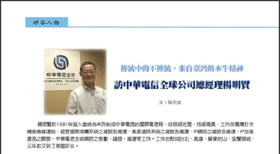

News
傳統中的不傳統‧來自臺灣的水牛精神
專訪中華電信全球公司總經理楊明賢
文：吳天宜, 美西玉山科技協會 2011/01/06 Monte Jade
步入中華電信全球位於聖荷西市的辦公大樓，今天要訪問的，是中華電信全球公司(CHT Global)的楊明賢總經理。中華電信全球公司隸屬於臺灣最大電信公司─中華電信─旗下的子公司。2002年中華電信為拓展海外市場，於聖荷西設立中華電信全球公司總部。總經理楊明賢自2008年由中華電信臺灣總部外派至矽谷，至今已將屆叁年。
楊明賢於1981年考進當時尚未改制成中華電信的國際電信局，參與電傳打字機的裝機與維修。楊總經理表示，電傳打字機即是電報，因為電報的發送及接收，有一種無法更改的記錄，對於生意人而言，在尚未有電子郵件的當時，電報既比當時的電話便宜，又有記錄可循，因此電傳打字機的發展在當時十分熱絡。直至近期因不合乎效益，才漸漸被電子郵件與電話所取代。
爾後， 楊總經理參與中華電信的國際海纜建設與維運工作。海纜即海底通信光纜，用以處理通信信號的發送及接收。楊總經理表示，進行海纜建設工程，首先進行招商，然後寫明規格、最後進行招標審標。海纜製造及建置公司大多為法國、英國、日本或者美國的建設公司。海纜佈放前必須對海床進行詳細的探勘，再依實際路由情況設計製造光纖、光纜與中繼器。海平面以下的世界，有高山有海谷，必須精確地偵測海底地形後，才能規劃海纜分布路線。楊明賢說：「佈海纜以海底深度區分，又分為深埋與淺埋。佈海纜需要技術，海纜船的行進與海纜下垂的速度要精確地配合。」一般而言，海纜自海纜船下垂至海底，依海深淺，費時約一到四天，海纜船會配合衛星定位系統，依規劃之路由佈放，而且船速與海纜出船入海的速度要掌握的很好，除此之外，還要克服海流與天氣變化等因素。若是海纜船行進速度比海纜入海的速度快，海纜就可能拉得太緊導致斷裂；若海纜船行速比海纜入海的速度慢，垂至海底的海纜就可能會繞成圈，兩者均會造成海底海纜的損壞。再者，遇上海底是高山及海谷的佈纜，船速及海纜入海速度均要變化，最好是讓海纜不鬆不緊地貼在海床上。至於海纜的維修，也有學問。首先需要由海纜站測定斷點，再派海纜船至斷點修纜，海纜船必須於斷裂點於海床將海纜剪斷，再分別將兩頭海纜撈上船上修理。
除了電傳打字機與國際海纜系統，於中華電信服務的三十年中，楊明賢也參與了衛星通訊系統之建設及維運、IP網路之建設以及IP加值產品之開發，以及中華電信全球網路規劃等工作。楊總經理的工作地點從臺灣的臺北、高雄、屏東枋山、宜蘭頭城到美國矽谷。談及為何願意離鄉背井，赴美就任，楊總經理笑著說：「吃人的頭路，一切聽頭家的。頭家叫我去哪，我就去哪。」楊總經理表示，矽谷臥虎藏龍，人才濟濟，當地也有眾多臺商與華商，是可以拓展商機的一池深水。再者對於高層的調派或任務安排，他相信每一步都有其策略性的考量與規劃。原本答應赴美兩年，雖無任期的限制，但現兩年已過，楊明賢的下一步，取決於總部的規劃為何。除了矽谷，中華電信同時在洛杉磯與德州設置據點。不同於臺灣的地小人稠，美國幅員遼闊，楊明賢因而更堅持著步步為營的策略來開拓海外市場，以維持中華電信這個來自臺灣最大的電信品牌。
平均每日工作十個小時的楊總經理，即便是下班回家也常要處理公務到半夜。因為位於臺灣的中華電信總部於早晨九點開會後，往往有新的公務需要美國分公司處理。楊總經理說：「我的理念是『把握時間』。因為時差的關係，訊息一來一往，本來一天可以完成的事就要費時兩天。雖然自己少一點時間休息，但我可以把需要兩天時間完成的事在一天處理妥當，達到最好的效率。 」在楊總經理身上看到的，是來自臺灣穩紮穩打，苦幹實幹的「水牛精神」。
對於工作十分投入的楊明賢，在談到家庭時，對太太帶著些許歉意，但也不忘感激並讚美太太為家庭的付出。楊明賢說：「自己對於工作付出得多，當然太太會比較辛苦。在臺灣時太太也要工作，但仍然幫我把家庭、小孩照顧得很好，讓我在衝刺工作之餘，沒有後顧之憂。」楊總經理表示，雖重視工作，但當家庭需要他，或者面對需要共同處理解決的事，他也一定不會缺席。本以為忙於工作的楊總經理，回到家中想必是位嚴父。對此，楊明賢表示，他不是嚴父，因為太太常常嗔他太疼小孩；但他也不是寵愛小孩，他只是認為對孩子不需要多方約束。「父母要懂得放手，但首先要判斷小孩這樣做會不會有危險。」楊明賢認為，孩子從自身經驗和挫折中所學習的，往往比父母保護與叮嚀還要管用。看似傳統的楊明賢，對於教育孩子及下一代，用的是不同於傳統的方法。
談及時下的「草莓族」，楊總經理認為，上一輩稱年輕一代叫「草莓族」，覺得他們吃不了苦、抗壓性也低。但是現在看到很多揚名國際的創意，不論在是在科技應用或者是時尚，都出自所謂「草莓族」的手筆。楊總說：「草莓族其實不草莓，而且還真有創意！」做為懂得「放手」的父母，似乎較能用開闊的心欣賞下一代的價值。畢竟每個世代都有著不同的時空背景，上一代若是以自身的價值觀來評量新一代年輕人，往往有太多可以挑剔，也會讓自己忽略世代已經在不經意中轉變。
帶著濃濃臺灣口音的楊明賢總經理，為來自臺灣的中華電信公司赴美開拓、深耕。談及過往經驗，總是三句不離本行。在述說過去於中華電信參與的項目及現有產品時，楊總經理的態度認真且一絲不茍，但同時又帶著溫和與耐心解說著電報與海纜系統。對於工作，楊明賢有著傳統的苦幹精神，以品質至上的在地耕耘，堅持踏出下一步之前，腳踏實地地站穩每一步。但對於下一代的教育，卻不同於傳統的約束與管教，在「有條件的放任」之下，给孩子更大的空間掌握自己的未來，同時也讓自己站在更高的角度觀察出下一代的價值。在傳統與不傳統之間，楊明賢拿捏出合於自我的分寸。
